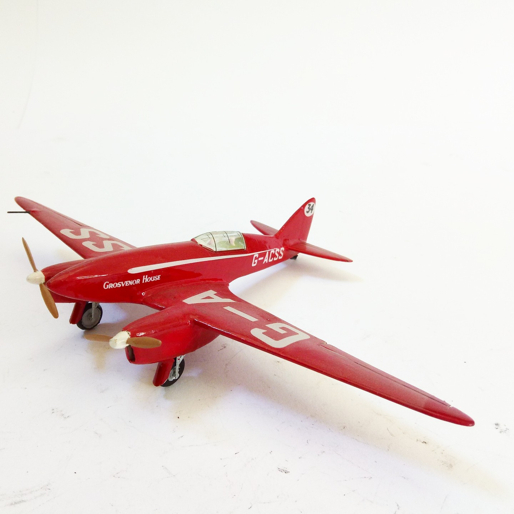
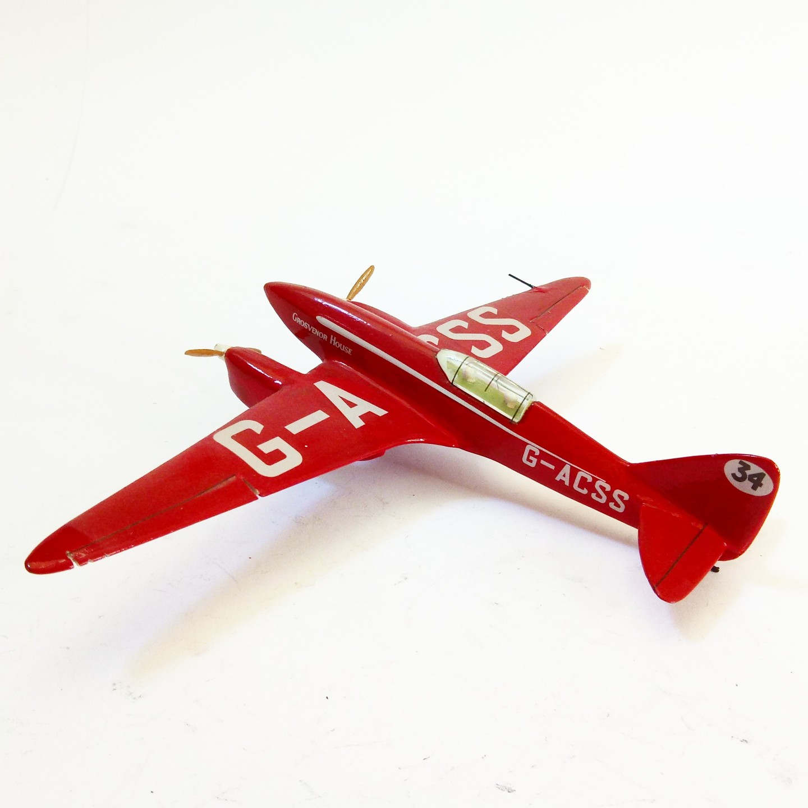

Aerei · scale model archive
De Havilland DH88 Comet racer
De Havilland DH88 Comet racer — Kit: Airfix, Scale: 1/72. Stunning livery and very nice racer lines captured by the old Airfix kit #1/72 #Airfix

Photo gallery

English description
Stunning livery and very nice racer lines captured by the old Airfix kit
#1/72 #Airfix
Descrizione italiana
Splendida livrea e very bello racer linee captured by il vecchio kit Airfix.